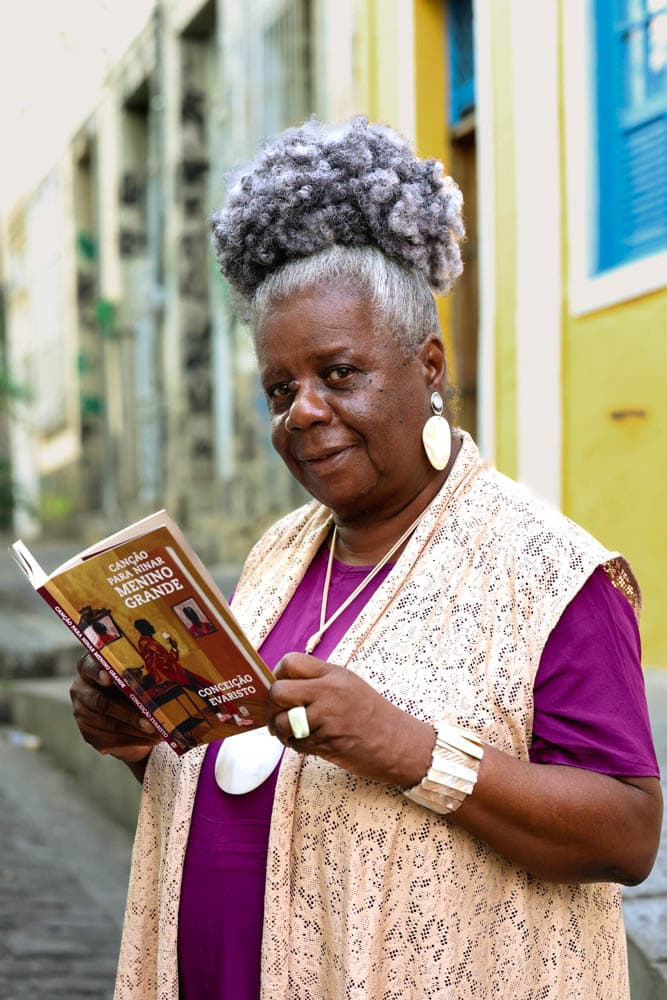

Exposição Consciência Negra
Ciência, Educação e Literatura

Conceição Evaristo
(Belo Horizonte, Minas Gerais, 1946–presente)
Nascida na favela do Pindura Saia em Belo Horizonte, é uma das vozes mais consagradas e influentes da literatura contemporânea brasileira. Educadora, ensaísta e doutora em Literatura Comparada pela UFF, cunhou o conceito de escrevivência — a escrita entrelaçada à vivência individual e coletiva das mulheres negras. Ocupa a Cadeira nº 40 da Academia Mineira de Letras e é referência mundial na afirmação da memória, da ancestralidade e da dignidade afro-diaspórica.
Obras e Projetos de Destaque
- Romances Consagrados: Autora dos aclamados romances Ponciá Vicêncio (2003) — com traduções internacionais — e Becos da Memória (2006), narrativas profundas sobre a diáspora, a favela e a força feminina negra.
- Coletâneas Premiadas e Poesia: Autora de Olhos d'Água (2014, obra vencedora do Prêmio Jabuti), Insubmissas Lágrimas de Mulheres (2011) e Poemas da Recordação e Outros Movimentos (2008).
- Criação do Conceito de "Escrevivência": Formulação teórico-literária seminal que revolucionou os estudos culturais ao fundir experiência vivida, oralidade e criação estética.
- Cadernos Negros e Consagração: Participante histórica da série Cadernos Negros desde 1990 e laureada com o Troféu Juca Pato (Intelectual do Ano 2023).